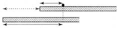
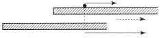
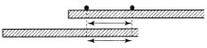

Öykümüzün bu aşamasında gene başlangıca, Galilei’nin süredurum yasasına dönmeliyiz. O yasayı bir daha analım:
“Her cisim, kendisini etkileyen kuvvetler onu durumunu değiştirmeye zorlamadıkça, durgun kalır, ya da hareketini doğru bir çizgi boyunca ve bir-biçimli sürdürür.”
Süredurum düşüncesi bir kez anlaşılınca, bu konuda başka ne söylenebileceği merak edilir. Bu problem önceden gerektiği gibi tartışılmış olmakla birlikte, bütün ayrıntıları ile ele alınmış değildir.
Süredurum yasasının doğru ya da yanlış olduğunun deneyle sınanabileceğine inanan ciddi bir bilim adamı düşününüz. Sürtünmeyi olabildiğince gidermeye çalışarak, yatay bir masada küçük birtakım küreleri yuvarlıyor. Masa ve küreler ne kadar düzgün olursa, hareketin de o kadar bir-biçimli olduğunu fark ediyor. Tam eylemsizlik ilkesinin yürürlüğünü ileri süreceği sırada, şakacının biri ona bir oyun ediyor. Fizikçimiz, penceresiz bir odada çalışmaktadır ve dış dünya ile herhangi bir bağlantısı yoktur. Şakacı, bütün odayı, odanın ortasından geçen bir eksende hızla döndüren bir mekanizma kuruyor. Dönme başlar başlamaz, fizikçimiz yeni ve beklenmedik şeylerle karşılaşıyor. Bir-biçimli hareket etmekte olan küre, odanın merkezinden olabildiğince uzaklaşıp duvarlara yaklaşmaya çalışıyor. Fizikçimiz, garip bir kuvvetin kendisini de duvara doğru ittiğini duyuyor. Bu duyum, bir dönemeçte hızlı giden bir trende ya da arabada, ya da özellikle çabuk dönen bir atlıkarıncada bulunan kimselerin duyumunun aynıdır. Fizikçimizin o ana dek vardığı sonuçlar allak bullak oluyor.
Fizikçimiz, süredurum yasası ile birlikte bütün mekanik yasalarını geçersiz diye bir yana bırakmak zorunda kalırdı. Onun çıkış noktası süredurum yasası idi; bu değişince, bundan çıkan bütün sonuçlar da değişir. Bütün ömrünü o dönen odada geçirmeye adayan ve deneylerini orada yapan bir fizikçinin mekanik yasaları, bizimkilerden farklı olurdu. Öte yandan, odaya girerken çok bilgiliyse ve fiziğin ilkelerine iyiden iyiye inanıyorsa, mekaniğin görünüşte altüst oluşunu odanın döndüğünü varsayarak açıklardı. Mekanik deneylerle odanın nasıl döndüğünü bile araştırabilirdi.
Dönen odadaki gözlemci ile neden bu kadar çok ilgileniyoruz? Yalnızca şunun için: Biz de, yeryüzünde, belirli bir ölçüde aynı durumdayız. Çünkü Copernicus’un çağından beri, Yer’in kendi ekseninde döndüğünü ve Güneş’in çevresinde dolandığını biliyoruz. Herkesin anlayıverdiği bu basit bilgi bile, bilimin ilerlemesi sırasında, dokunulmadan kalmamıştır. Ama şimdilik bu sorunu bırakalım ve Copernicus’un görüşünü kabul edelim. Dönen odadaki gözlemcimiz mekanik yasalarının doğruluğunu saptayamıyorsa, biz de bu işi yeryüzünde başaramamalıydık. Ama Yer’in dönmesi odanınkine oranla yavaştır; dönmenin etkisi çok belirgin değildir. Bununla birlikte, mekanik yasalarından küçük bir sapma olduğunu gösteren birçok deney vardır, ve bu deneylerin tutarlılığı, Yer’in dönmesinin kanıtı sayılabilir.
Ne yazık ki, süredurum yasasının geçerliliğini eksiksiz olarak sınamak ve Yer’in döndüğünü gözlerimizle görmek için Güneş ile Yer arasında durup gözlem yapamıyoruz. Bunu ancak düşünebiliriz. Bütün deneylerimizi, ister istemez yaşadığımız yeryüzünde yapmak zorundayız. Bu olgu, daha bilimsel olarak, çoğu zaman şöyle belirtilir: Yer, bizim koordinat sistemimizdir.
Bunun anlamını açıklamak için basit bir örnek verelim: Bir kuleden aşağı bırakılan taşın herhangi bir andaki konumunu önceden bildirebilir ve bunu deneyle doğrulayabiliriz. Kulenin yanına bir ölçme sırığı koyarsak, düşen cismin herhangi bir anda sırığın hangi noktasının karşısında olacağını önceden söyleyebiliriz. Kulenin ve ölçme sırığının lastikten ya da deney sırasında değişikliğe uğrayabilecek herhangi başka bir maddeden yapılmamak gerektiği bellidir. Gerçekte, deneyimiz için yalnız şunlar gereklidir: Yer’e dimdik ve sıkı sıkıya tutturulmuş değişmeyen bir ölçü sırığı ile iyi bir saat. Bunlar varsa, yalnız kulenin mimarisini değil, varlığını bile umursamayabiliriz. Bütün bu varsayımlar önemsizdir ve böyle deneyler tanımlanırken çoğu zaman belirtilmez. Ama bu çözümleme (analysis) bütün bu söylediklerimizin ardında gizli kaç varsayım bulunduğunu göstermektedir. Örneğimizde, hiç kımıldamayan bir ölçü sırığı ile ideal bir saat bulunduğunu varsaydık. Onlar olmadan, Galilei’nin düşen cisimlerle ilgili yasasını sınayamazdık. Basit, ama vazgeçilmez olan bu fiziksel aygıtlarla, bir sırık ve bir saatle, bu mekanik yasasının doğruluğunu belirli bir kesinlikle saptayabiliriz. Bu deney, dikkatle yapılmışsa, teori ile deney arasında Yer’in dönmesinden ileri gelen aykırılığı ya da, başka bir söyleyişle, Galilei’nin formülleştirdiği mekanik yasalarının Yer’e sımsıkı bağlı bir koordinat sisteminde harfi harfine geçerli olmadığını gösterir.
Bütün mekanik deneylerde –deneyin çeşidi ne olursa olsun–, düşen bir cisimle yapılan yukarıdaki deneyde olduğu gibi, maddesel noktaların belirli bir andaki konumlarını belirlememiz gerekir. Ama konum, her zaman bir şeye göre belirlenir. Örneğin, yukarıdaki deneyde belirleme, kuleye ve ölçme sırığına göre yapılmıştır. Cisimlerin konumlarını belirleyebilmemiz için, elimizde mekanik bir dayanak, başvuru sistemi (frame of reference) dediğimiz herhangi bir şey olmalıdır. Bir kentteki konutların, insanların, vb. konumlarını tanımlarken, caddeler ve sokaklar ile onlar arasında ilişki kurarız. Şimdiye dek, mekanik yasalarını anarken, başvuru sistemini bildirmek gibi bir kaygımız olmadı; çünkü hepimiz yeryüzünde yaşıyoruz ve herhangi bir özel durumda, Yer’e sıkı sıkıya bağlı bir başvuru sistemi saptamak bizim için güç değildir. Hiç kımıldamayan, değişmeyen cisimlerden kurulmuş olan ve bütün gözlemlerimizde kendisine başvurduğumuz bu sisteme koordinat sistemi denir. Bu deyim çok sık kullanılacağı için, onun yerine yalnızca KS yazacağız.
Şimdiye kadarki bütün fiziksel saptamalarımızın eksik bir yanı vardı. Bütün gözlemlerin belirli bir KS’de yapılmak gerektiğini hiç dikkate almadık. Bu KS’nin yapılışını tanımlayacak yerde, onun varlığını düpedüz bilmezlikten geldik. Örneğin, “bir cisim, bir-biçimli hareket ediyor...” derken, gerçekte “bir cisim, seçilen bir KS’ye ilişkin (relative) ve bir-biçimli hareket ediyor...” demeliydik. Dönen oda örneği, mekanik deney sonuçlarının, seçilen KS’ye bağlı olabildiğini bize öğretti.
İki KS birbirine göre dönüyorsa, o zaman, mekanik yasaları onların ikisinde birden geçerli olamaz. Bu iki koordinat sistemi birer yüzme havuzu ise, havuzlardan birindeki suyun yüzeyi yataysa, öbüründeki suyun yüzeyi, tıpkı kaşıkla karıştırılan bir bardak çayın yüzeyi gibi çukurlaşır.
Mekaniğin başlıca yasalarını formülleştirirken, önemli bir noktayı atladık. Onların hangi KS için geçerli olduğunu söylemedik. Bundan ötürü, bütün klasik mekanik boşlukta asılı duruyor; çünkü onun neye ilişkin (relative) olduğunu bilmiyoruz. Bununla birlikte, bu güçlüğü şimdilik bir yana bırakalım. Biraz yanlış bir varsayımda bulunarak şöyle diyeceğiz: Klasik mekaniğin yasaları Yer’e sımsıkı bağlı bütün KS’lerde geçerlidir. Bunu, KS’yi saptamak ve söylediklerimizi belirli kılmak için yapıyoruz. Yer’in uygun bir başvuru (reference) sistemi olduğunu söylüyoruz. Bu, tümüyle doğru değildir. Ama şimdilik öyle olduğunu varsayacağız.
Bundan dolayı, mekanik yasaların geçerli olduğu bir KS bulunduğunu da varsayıyoruz. Peki ama, bu KS, bu türlü biricik KS midir? Yer’e ilişkin (relative) hareket eden bir tren, bir gemi, bir uçak gibi bir KS bulunduğunu düşününüz. Mekanik yasaları bu sistemler için de geçerli olacak mıdır? Örneğin bir dönemeçten geçen trende, fırtınalı denizde çalkalanan bir gemide, sarmal iniş yapan bir uçakta, mekanik yasalarının her zaman geçerli olmadığını kesinlikle biliyoruz. Basit bir örnekle başlayalım: Bir KS, bizim “iyi” KS’mize, yani, mekanik yasalarının geçerli olduğu bir KS’ye ilişkin (relative) ve bir-biçimli hareket ediyor. Örneğin, doğru bir çizgi boyunca ve hiç değişmeyen bir hızla süzülüp giden bir tren ya da gemi. Günlük yaşantımızdan biliyoruz ki, bu sistemlerin ikisi de “iyi”dir, bir-biçimli hareket eden bir trende ya da gemide yapılan fiziksel deneyler, tıpkı yeryüzünde yapılanlar gibi sonuç verir. Ancak, tren durursa, ya da birdenbire hızlanırsa, ya da deniz dalgalıysa, garip şeyler olur. Trende bavullar raflardan düşer; gemide, masalar ve sandalyeler yuvarlanır ve yolcuları deniz tutar. Fizik bakımından, bunun anlamı şudur: Mekanik yasaları bu KS’lere uygulanamaz; bunlar, “kötü” birer KS’dir.
Bu sonuç, Galilei ilişkinlik (relativity) ilkesi adı verilen ilkeye göre şöyle açıklanabilir: Mekanik yasaları bir KS’de geçerliyse, o KS’ye ilişkin (relative) olarak bir-biçimli hareket eden herhangi bir başka KS’de de geçerlidir.
Birbirine ilişkin (relative) hareketleri bir-biçimli olmayan iki KS varsa, mekanik yasaları onların ikisinde birden geçerli olamaz. “İyi” koordinat sistemlerine, yani, mekanik yasaların geçerli olduğu KS’lere süredurumlu (inertial) sistemler diyoruz. Süredurumlu bir sistem olup olmadığı sorusuna gelince, bu soru henüz ortadadır. Ama böyle bir sistem varsa, o zaman sonsuz sayıda böyle sistem vardır. Süredurumlu KS’ye ilişkin (relative), bir-biçimli hareket eden bütün KS’ler de süredurumludur.
Söyle bir durum düşünelim: Çıkış noktaları bilinen, biri öbürüne ilişkin (relative), bir-biçimli ve belirli bir hızla hareket eden iki KS var. Somut şeylerden hoşlananlar, yere ilişkin (relative) hareket eden bir gemi ya da tren düşünebilirler. Mekanik yasaları, yeryüzünde bir-biçimli hareket eden bir trende ya da gemide, deneysel yoldan kesinlikle doğrulanabilir. Ama farklı KS’lerde bulunan gözlemciler, aynı olayla ilgili gözlemlerini tartışmaya başlarlarsa, bir güçlükle karşılaşırlar. Her gözlemci, öbürünün gözlemlerini kendi diline çevirmek ister. Gene basit bir örnek alalım: İki KS’den, yeryüzünden ve bir-biçimli hareket eden bir trenden, bir taneciğin aynı hareketi gözleniyor. KS’lerin ikisi de süredurumludur. Bu iki KS’nin herhangi bir andaki ilişkin (relative) çabuklukları ve konumları bilinirse, bir KS’de gözlenenin ne olduğunu anlamak için, öbüründe gözleneni bilmek yeter mi? Olayları tanımlamak için, bir KS’den öbürüne nasıl geçileceğini bilmek pek önemlidir; çünkü her iki KS eşdeğerdir ve ikisi de, doğadaki olayları tanımlamaya eşit ölçüde elverişlidir. Bir KS’deki gözlemcinin elde ettiği sonuçları bilmek, öbüründeki gözlemcinin elde ettiği sonuçları bilmeye gerçekten yeter.
Problemi gemi ve tren olmadan, daha soyut olarak ele alalım. Kolaylık olsun diye yalnız doğru çizgiler üzerindeki hareketi inceleyeceğiz. Öyleyse, bize gereken, eğilip bükülmeyen bir ölçme sırığı ile iyi bir saattir. Sırık, doğrusal hareketin basit durumunda, Galilei deneyinde kulenin yanına konan ölçme sırığı gibi, bir KS yerine geçiyor. Doğrusal hareket durumunda böyle bir sırığı, ve uzayda keyfi hareket ediyorsa kuleleri, duvarları, caddeleri, vb. umursamadan, paralel ve dik sırıklardan kurulmuş bir iskeleyi bir KS olarak düşünmek her zaman daha basit ve daha iyidir. En basit örneğimizde, iki KS, yani eğilip bükülmeyen iki sırık bulunduğunu düşününüz; şekilde [Şekil-53], bunların birini üste, öbürünü ise alta çiziyor ve birinciye “üst”, ikinciye de “alt” KS diyoruz.

[Şekil-53]
Bu iki KS’nin, birbirine ilişkin (relative), belirli bir çabuklukla hareket ettiğini, öyle ki, birinin öbürü boyunca kaydığını varsayıyoruz. Her iki sırığın da sonsuz uzunlukta olduğunu, başlangıç noktaları bulunduğunu ve bitim noktaları bulunmadığını varsaymak sakıncasızdır. Zaman bu iki KS için aynı hızla geçiyor; bundan dolayı, ikisi için bir tek saat elverir. Gözlemimize başlarken iki sırığın başlangıç noktaları yanyanadır. O anda, her iki KS’de de, maddesel bir noktanın konumu aynı sayı ile belirlenir. Maddesel nokta, bölgülü ölçme sırığındaki bir nokta ile çakışır. Bu nokta, maddesel noktanın konumunu belirleyen bir sayı verir. Ama sırıklar birbirine ilişkin (relative) ve bir-biçimli hareket ederse, her iki KS’deki konumlara uygun düşen sayılar, bir süre sonra, söz gelimi bir saniye sonra, başka başka olacaktır. Üst sırıkta, duran bir maddesel nokta düşününüz. Onun üst sırıktaki konumunu belirleyen sayı zamanla değişmez. Oysa alt sırık için geçerli olan sayı değişecektir. “Bir noktanın konumuna uyan sayı” yerine, kısaca, bir noktanın koordinatı diyeceğiz. Bundan sonraki tümce insana karmaşık gelmekle birlikte, bu tümcenin doğru olduğu ve çok basit bir şeyi anlattığı, şekilden [şekil-53] anlaşılır: Alt KS’deki bir noktanın koordinatı, o noktanın üst KS’deki koordinatı ile üst KS’nin başlangıcının alt KS’ye ilişkin (relative) koordinatının toplamına eşittir. Burada önemli olan şudur: Bir taneciğin bir KS’deki konumunu bilirsek, onun öbür KS’deki konumunu, her zaman hesaplayabiliriz. Bunu yapabilmek için, iki koordinat sisteminin ilişkin (relative) konumlarını her an bilmemiz gerekir. Bütün bunlar, engin bilgi isteyen şeyler gibi görünüyorsa da, gerçekte çok basit ve ileride yararlı bulmadığımız sürece böyle ayrıntılı olarak tartışılmaya değmeyen şeylerdir.
Burada, bir noktanın konumunu belirlemek ile bir olayın zamanını belirlemek arasındaki fark üzerinde bir daha duralım. Her gözlemcinin kendi sırığı vardır. Ve her gözlemcinin KS’si, onun kendi sırığıdır. Ama her iki gözlemci için bir tek saat vardır. Zaman, bütün KS’lerdeki gözlemcilerin hepsi için aynı biçimde geçen “salt” (“absolute”) bir şeydir.
Başka bir örnek: Adamın biri, büyük bir geminin güvertesinde, saatte üç kilometre hızla geziniyor. Bu, onun gemiye ilişkin (relative) hızıdır, ya da, başka bir söyleyişle, gemiye sımsıkı bağlı bir KS’ye ilişkin (relative) hızıdır. Geminin kıyıya ilişkin (relative) hızı saatte otuz kilometreyse, ve gemi ile adamın bir-biçimli hareketleri aynı yöndeyse, o zaman, güvertede dolaşan adamın kıyıdaki bir gözlemciye ilişkin (relative) hızı saatte 33 kilometre, gemiye ilişkin (relative) hızı saatte üç kilometre olacaktır. [Şekil-54] Bu olguyu daha soyut olarak şöyle formülleştirebiliriz:

[Şekil-54)
Alt KS’ye ilişkin (relative) hareket eden maddesel bir noktanın hızı eşittir: Üst KS’ye ilişkin (relative) hız –ve hızların yöndeş olmasına ya da olmamasına göre– artı ya da eksi üst KS’nin alt KS’ye ilişkin (relative) hızı. Bundan dolayı, iki KS’nin ilişkin (relative) hızlarını biliyorsak, yalnız konumları değil, hızları da bir KS’den öbürüne her zaman dönüştürebiliriz. Konumlar ya da koordinatlar ve hızlar belirli –ve incelenen örnekte çok basit– dönüşüm yasaları ile birbirine bağlı farklı KS’lerdeki farklı nicelik örnekleridir.
Bununla birlikte, her iki KS’de de aynı olan ve dönüşüm yasalarını hiç gerektirmeyen nicelikler de vardır. Örnek olarak, üst sırıkta duran bir değil, iki nokta alalım ve aralarındaki uzaklığı düşünelim. Bu uzaklık, o iki noktanın koordinatları arasındaki farktır. Farklı KS’lere ilişkin (relative) iki noktanın konumlarını bulmak için dönüşüm yasalarını kullanmamız gerekir. Ama iki konumun farkları saptanırken, şekilden de anlaşıldığı gibi, farklı KS’lerin katkıları birbirini ortadan kaldırır. [Şekil-55] İki KS’nin başlangıçları arasındaki uzaklığı önce toplamamız ve sonra çıkarmamız gerekir.

[Şekil-55]
Bundan dolayı, iki noktanın uzaklığı değişmezdir (invariant), yani seçilen KS’ye bağlı değildir.
KS’ye bağlı olmayan bir nicelik örneği de hız değişmesidir. Bu kavramı mekanikten biliyoruz. Gene, doğru bir çizgi boyunca hareket eden maddesel bir nokta, iki KS’den gözleniyor. Bu noktanın hızındaki değişme, her KS’deki gözlemci için, iki çabukluk arasındaki farktır, ve iki KS’nin bir-biçimli ilişkin (relative) hareketinden doğan katkı, fark hesaplanırken, ortadan kalkar. Bundan ötürü, hız değişmesi değişmez bir niceliktir. Ama bu, elbette ancak iki KS’mizin ilişkin (relative) hareketi bir-biçimliyse böyledir. Yoksa koordinat sistemi olarak yararlandığımız iki sırığın ilişkin (relative) hareketindeki hız değişmesinden ileri gelen fark yüzünden, hız değişmesi iki KS’nin her birinde farklı olurdu.
İşte son örnek! İki maddesel nokta var. Bu iki nokta arasında, yalnız uzaklığa bağlı kuvvetler etki gösteriyor. Doğrusal hareket durumunda uzaklık ve bundan dolayı da kuvvet, değişmezdir (invariant). Bundan ötürü, kuvvet ile hız değişmesini birbirine bağlayan Newton yasası, her iki KS’de de geçerli olacaktır. Gene günlük yaşantımızın doğruladığı bir sonuca varıyoruz: mekanik yasaları bir KS için geçerliyse, ona göre bir-biçimli hareket eden bütün KS’ler için de geçerlidir. KS’nin eğilip bükülmeyen bir sırıkla gösterildiği doğrusal hareket örneğimiz, elbette çok basit bir örnekti. Ama vardığımız sonuçlar genellikle geçerlidir ve şöyle özetlenebilir:
1) Süredurumlu bir sistem bulmanın yolunu bilmiyoruz. Bununla birlikte, böyle bir sistem verilmişse, sonsuz sayıda böyle sistem bulabiliriz; çünkü birbirine ilişkin (relative), bir-biçimli hareket eden sistemlerin biri süredurumlu ise, hepsi süredurumludur.
2) Bir olaya karşılık olan zaman, bütün KS’lerde aynıdır. Ama koordinatlar ve hızlar farklıdır ve dönüşüm yasalarına göre değişir.
3) Koordinatlar ve hız, bir KS’den öbürüne geçerken değişir, ama kuvvet ve hız değişmesi, ve dolayısı ile mekanik yasaları, dönüşüm yasalarına göre değişmezdir (invariant).
Burada koordinatlar ve hızlar için formülleştirdiğimiz dönüşüm yasalarına, klasik mekaniğin dönüşüm yasaları, ya da kısaca, klasik dönüşüm diyeceğiz.